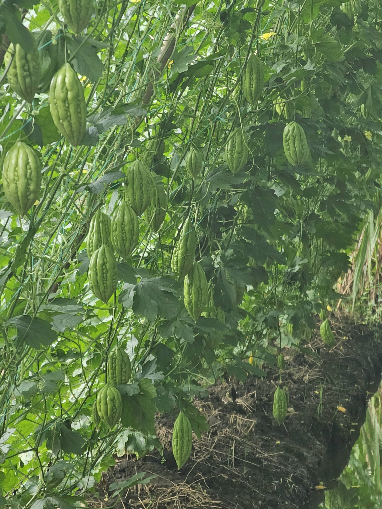
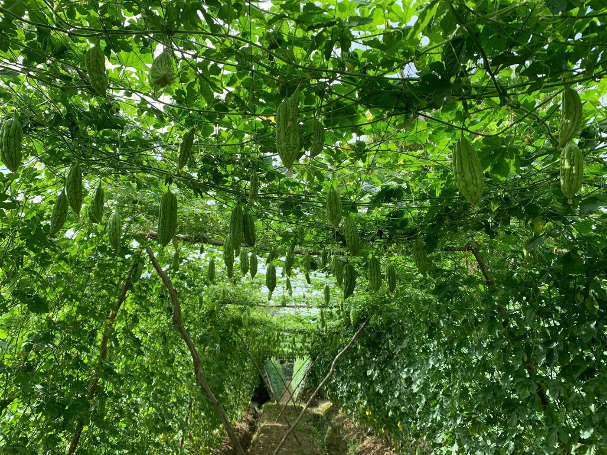
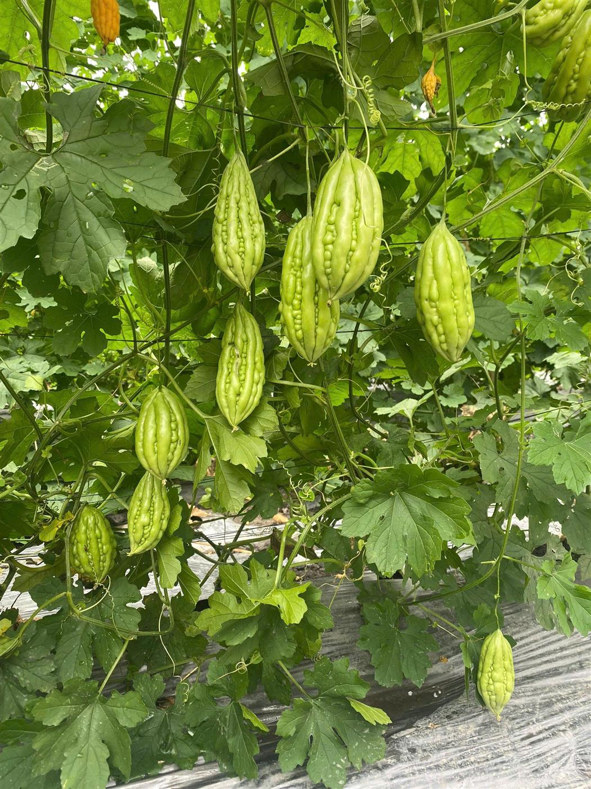
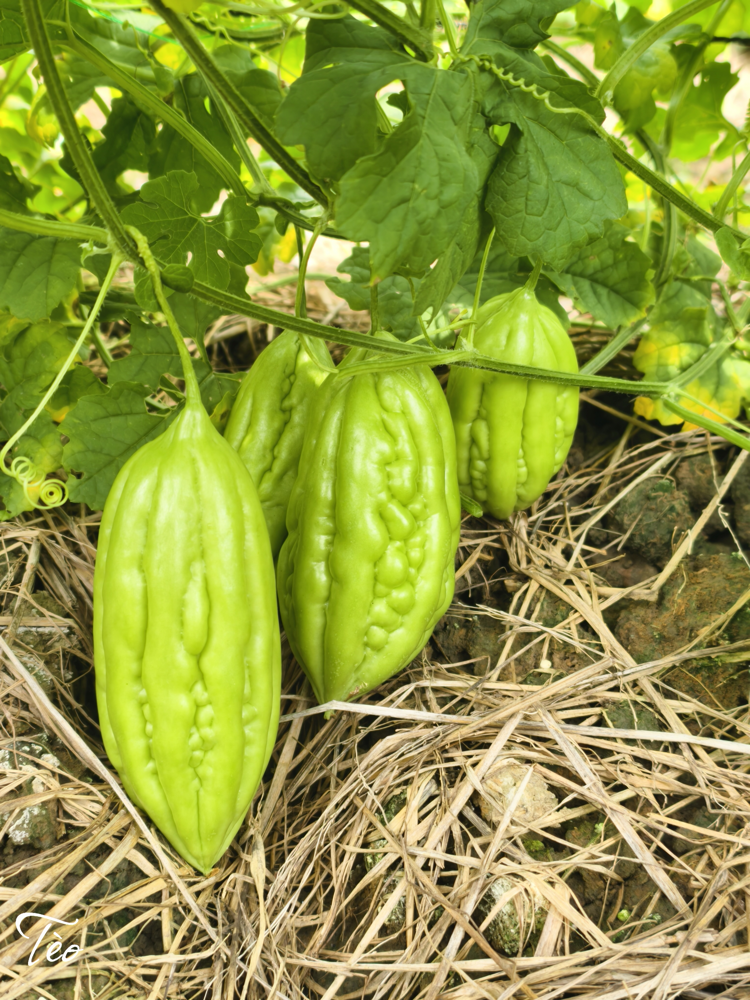
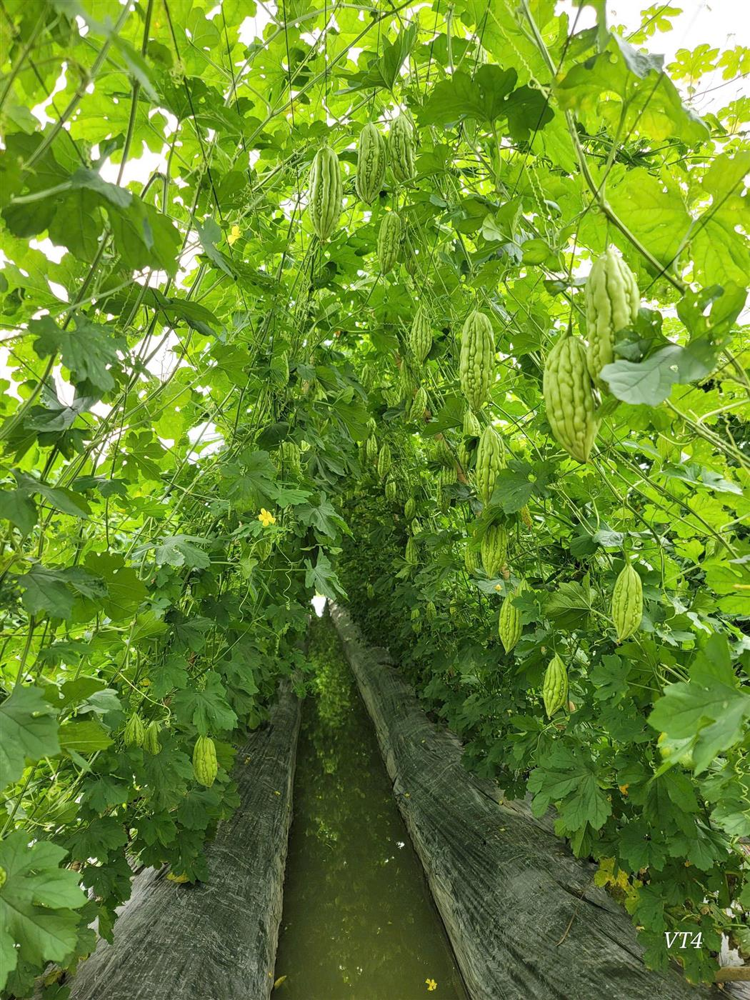
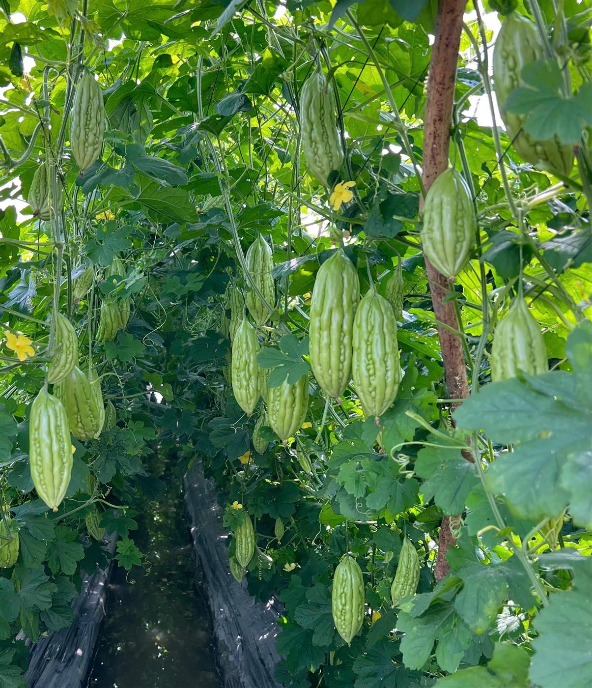
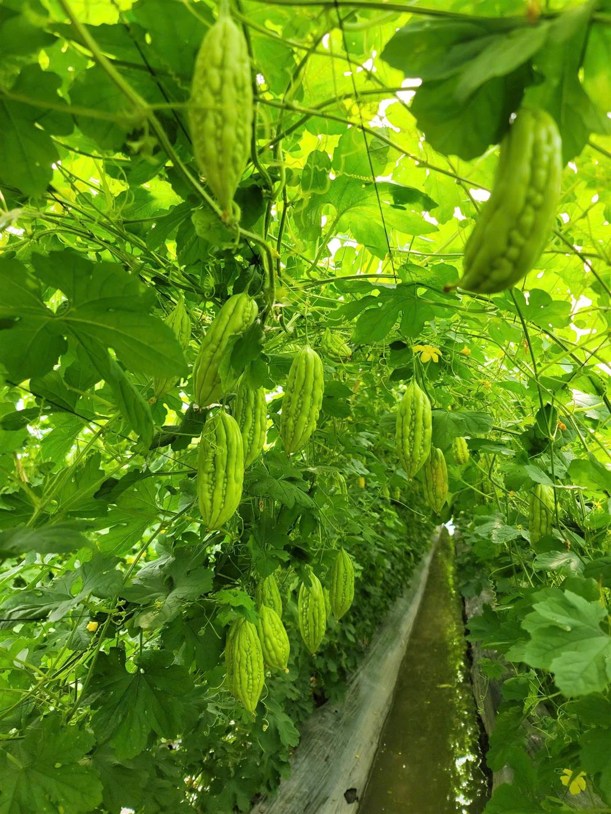
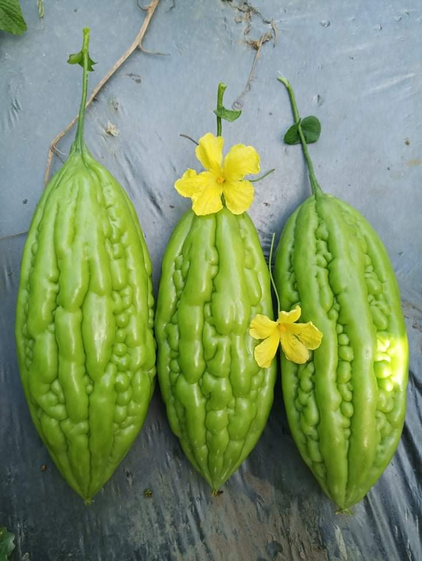
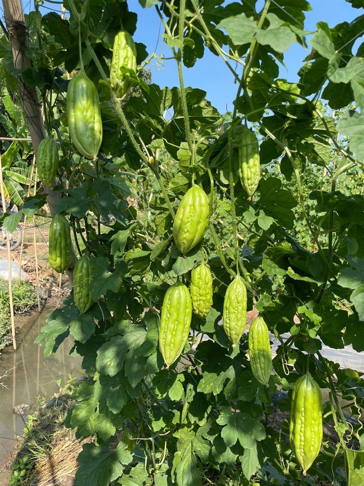

Kỹ thuật trồng Khổ qua Mầm Xanh: Sai trái, ít bệnh, trúng mùa đậm
Khổ qua là loại rẫy ngắn ngày, dễ trồng, mau cho thu hoạch và đầu ra lúc nào cũng ổn định ở miền Tây. Tuy nhiên, để giàn khổ qua xanh tốt, trái suôn đẹp, nặng ký và ít tốn tiền thuốc bảo vệ thực vật, bà con mình cần nắm vững mấy kỹ thuật cốt lõi dưới đây.

1. Chọn giống và thời vụ
- Giống: Bà con nên chọn các giống lai F1 uy tín, phù hợp khí hậu nóng ẩm miền Tây như khổ qua trái ngắn Mầm Xanh.
- Thời vụ Đông Xuân (xuống giống tháng 10–11 âm lịch) và Xuân Hè thường cho năng suất cao nhất, ít sâu bệnh hơn mùa mưa dầm.

2. Làm đất và lên liếp
Đặc thù đất miền Tây dễ bị úng nước vào mùa mưa và dễ xì phèn nhẹ, nên khâu làm đất phải kỹ:
- Cày xới đất tơi xốp, phơi ải khoảng 7–10 ngày để diệt mầm bệnh.
- Lên liếp cao 30–40 cm, mặt liếp rộng 1–1,2 m, mương thoát nước phải thông thoáng để tránh ngập úng làm thối rễ.
- Bón lót: Bón 20 ký NPK 20–20–15 kết hợp phân lân và một ít nấm đối kháng Trichoderma để ngừa bệnh chết cây con.
- Trải màng phủ nông nghiệp: Giúp giữ ẩm, hạn chế cỏ dại, giảm rửa trôi phân bón và ngăn ngừa sâu bệnh từ đất bò lên.
3. Ươm hạt và xuống giống
- Xử lý hạt: Vỏ hạt khổ qua khá dày nên bà con ngâm nước ấm (2 sôi 3 lạnh) khoảng 6–8 tiếng. Vớt ra rồi đem ủ trong khăn ẩm khoảng 36–40 tiếng là hạt nứt nanh.
- Ươm bầu: Cho hạt đã nứt nanh ra đồng gieo xuống ruộng. Hoặc khi nứt nanh thì cho hạt vào bầu ươm (giá thể gồm tro trấu, xơ dừa, phân hữu cơ). Ươm khoảng 3–4 ngày, khi cây ra lá mầm, rễ ăn trắng bầu thì đem ra liếp trồng.
- Khoảng cách: Trồng 1 hàng giữa liếp (cây cách cây 40–50 cm) hoặc 2 hàng so le nếu đất rộng, giúp giàn thông thoáng.

4. Làm giàn và chăm sóc
- Làm giàn: Khi cây cao khoảng 25–30 cm và bắt đầu ra tua cuốn thì làm giàn chữ A (cao khoảng 1,8–2 m), giăng lưới cước cho dây leo đều.
- Tỉa chèo, tỉa lá: Khi cây ra được 6–7 tầng lá thì tiến hành ngắt đọt để cây đâm chèo mạnh.
- Tưới nước: Khổ qua rất cần nước, đặc biệt là giai đoạn ra bông và nuôi trái. Nên tưới vào sáng sớm hoặc chiều mát, tránh tưới đẫm vào buổi tối dễ sinh bệnh thán thư.


5. Chế độ bón phân
Bà con chia phân ra bón nhiều đợt để cây ăn từ từ, tránh bón quá nhiều đạm làm dây tốt um mà ít đậu trái:
- Đợt 1 (sau trồng 10–12 ngày): Tưới phân NPK có hàm lượng đạm và lân cao như 20-20-15 và DAP kết hợp dưỡng rễ giúp cây mau bắt đất, mập dây.
- Đợt 2 (khi cây bắt đầu ra bông, khoảng 25–30 ngày): Bón NPK cân bằng kết hợp bổ sung Canxi – Bo phun qua lá để tăng tỷ lệ đậu trái, tránh rụng bông, nứt trái.
- Đợt 3 (giai đoạn nuôi trái và thu hoạch): Sau mỗi 2–3 lứa hái, bà con bón thúc thêm NPK có hàm lượng Kali như 16-16-16 hoặc 17-17-17 để trái lớn nhanh, màu xanh bóng, gai nở đẹp và nặng ký.

6. Phòng trừ sâu bệnh thường gặp
- Sâu hại: Đáng ngại nhất là ruồi vàng đục trái (làm trái bị dòi, thối rụng). Bà con nên treo bẫy pheromone quanh rẫy. Ngoài ra, cần thăm rẫy thường xuyên để trị sớm bọ trĩ, rầy mềm và sâu xanh ăn lá.
- Bệnh hại: Mùa mưa hoặc lúc trời âm u dễ bị nứt thân chảy mủ, sương mai và phấn trắng. Phòng ngừa bằng cách thoát nước tốt, không trồng quá dày và phun thuốc gốc đồng hoặc thuốc trị nấm định kỳ vào sáng sớm.

7. Thu hoạch
Sau khi trồng khoảng 38–45 ngày là bà con có thể hái lứa đầu. Nên hái vào sáng sớm cho trái tươi lâu. Chọn những trái vừa độ (gai nở đều, bóng mượt, còn cứng tay), đừng để quá già trái sẽ bị sượng, mất giá mà lại làm suy dây. Nếu chăm sóc khéo, một vụ khổ qua có thể thu hoạch kéo dài từ 1,5 đến 2 tháng.


Chúc bà con mình áp dụng thành công, giàn khổ qua lúc nào cũng sai oằn trái, trúng mùa được giá.